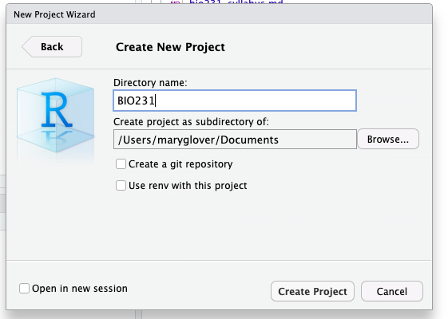

Base R
Learning objectives
By the end of this lesson, you should be able to:
- Navigate Rstudio
- Run code from console notebook
- Perform mathematical operations in R
- Assign variables
- Describe different data types
- Use functions
- Import data into R
Introduction
What is R?
R is a free, open source computing software used for statistical analysis and graphing. R is also a computing language. This means that R software interprets the R language, which is a specific set of vocabulary, formatting, and structure, to perform specific tasks. Other coding languages are Java, C++, python, etc.
What is Rstudio?
Rstudio is an interface that runs the R software in a user friendly format. Rstudio allows the user to run R code, take notes, view graphs, and view files in one window.

Rstudio
File management
R projects
You will make an R project for the class work. When you open Rstudio it will automatically open the last project. Or you can open by using File –> Open Project.
Tips for naming files and directories
- R is case sensitive! So be aware of your capitalization
- Do not use spaces in your names. If you would like to separrate words you can use “_” or “-”
- Pay attention to file extensions (i.e. .jpg, .pdf, .txt). You will need to use full name when working with files.
- Folders in names are separated by “/”. So for example the directory “Documents/bio_files” is a folder “bio_files” inside the folder “Documents.” “Documents/bio_files/photosynthesis.pdf” Is a PDF file inside the bio_files folder.
Exercise: Complete the make an R project exercise
Using R
The next few sections will go through common tasks performed in R, which are needed to complete analyses.
Mathematical calculations
R can perform basic mathematical calculations. To compute a calculations, simply type it in the Console. You can do addition (+), subtraction (-), multiplication (*), division (/), power (^), to name a few. You can also use parentheses as usual in mathematical equations.
For example for 5 times 2:
One your own, try some mathematical calculations in the Console.
Using a R script
Open up a new script by going to File –> New File –> R script. A script file will open above the console.

All of your code should be typed in the script. To run the code from the notebook, but your cursor on the line that you want to run. Then click “Ctrl + enter” on a Windows or Linux machine or ‘Cmd + enter’ on a Mac.
To add notes, add a ‘#’ to the beginning of a line. This line will not be run in R. For example:
Exercise Try out some code in a script. Complete steps one and two of exercise 2.
Functions in R
Functions are run using the function name followed by the “arguments.” A function can have any number of arguments.

Functions
For example, log is a function that will take the natural log of the value given as an argument.
The log function can also take an addition argument which sets the base that the logarithms are computed. Two arguments are possible with log, x (or the value) and base. So to take the base 10 logarithm of the value 1.5, you could do the following:
There are many other mathematical function such as sum, max, min, mean, median, sd (standard deviation).
Hint: To get help with a specific function, use ‘?’ followed by the function name
Exercise Try out a function in your script. Complete step three exercise 2.
Assigning variables
In R, you can store information (numbers, tables, text, etc.) in variables. To do this, a variable is assigned a name using the characters <-. For example, to assign the letter a the value 1.5, type:
Then, when you run a, you can see the value.
You can now treat a as 1.5. For example, you can take the log of a, which is the same as running log(1.5)
Data types
So far, we have only dealt with single numbers, but R can handle numbers or text. With numbers, you can type them in regularly and R will recognize them as such. Text is put into quotations (““). You can use single(’) or double (”) in R. Without the quotation mark R will try to find a variable of the same name.
For example, instead of a number, you can store text in a variable:
Then when your run the varable b, you get the text as the output.
Vectors
Data can be stored in different data structures including vectors, data frames, and matrices.
Vectors are a one dimensional way to put together data of the same type (i.e. all text or all characters). The most common way to create a vectors is by using the c() function, which concatenates, or combines, values into a vector.
Here, a vector with the numbers 5, 10, 20 are made into a vector named example.vector
You can also perform mathematical calculations or functions with vectors. The function is performed on each entry in the vector
Vectors can also store character data.
Using Functions
You can also run a function with a vector. For example, the function sum takes the sum of all numbers.
You can also use functions on vectors made with characters. For example, here I will use the function length to see how long the character vector rainbow_colors is.
Subsetting vectors
One useful tool is using subsets to determine what is in a specific place in a vector. This is done using brackets “[]”.
In the rainbow_colors vector, there are 7 elements. If you want to see what is the third element, you would do the following:
If you want to to see what is in the fourth, fifth, and sixth place, you would use the c() function again to use more than one number.
Alternatively, in R you can also use 4:6 to go from 4 to 6. The : symbol creates a sequence.
Data frames
Data frames are data structures with rows and columns, like a table. Each column is essentially a vector, so must have the same data type (i.e. numbers or characters). However, a data frame can consists of columns with different data types. This is widely used for storing data because you can have a column with the treatment name (text) and then a column of the measurement (number).
A data frame might look something like this
treatment growth
1 control 5
2 control 8
3 control 6
4 high N 1
5 high N 8
6 high N 9
7 low N 5
8 low N 2
9 low N 3A matrix is similar to a data frame except that all data in a matrix are the same type (i.e. all characters or all numbers).
Working with data frames
Data frames most common data structure that you will be working with. Here, we will go over some of the basics of data frames.
Creating a data table
For the most part, you will be importing data into R as a data frame from a csv file. However, you can make your own using R functions.
One way to make a data frame to do this is using the function data.frame() The arguments are what goes into the data frame columns. This data frame will have one column of characters and two columns of numbers. You can also use “=” to name the column.
You should also save the data frame assigning (<-) to a variable.
You can also add row or column names or change the existing ones using rownames or colnames.
Import data
Often data is much bigger than a 3x3 table and is organized in an excel sheet. The main way that you will be adding data to R is using the read.csv function. This function takes the file name in quotes as an argument, file. It also has the argument header. This defaults to TRUE. if you have a header you can leave it. If not header should be FALSE. Otherwise the first row of data will be make into the header.
For example, if I have a file “fly_data.csv” in my directory I can load it in an assign it fly as follows:
To check the data, it doesn’t always make sense to show the whole data frame, especially if it is very large. I can use the function head to only show the first 10 rows.
Exercise Import your data from last class exercise
Subsetting
Just like you did with vectors, you can also show specific rows and columns or subset data frames. This is again done with brackets. However, in data frames you specify the number row and columns. The first number in brackets is the row, the second is the column. So if you want the third row in the first column you would use [3, 1]. For example:
Again, you can specify a range using “:”
If you would like all rows or all columns, you leave the place in brackets empty.
In data frames, you can also specify the column using “$” and the name of the column.
Functions on data frames
When specify just a single column in the last section, you essentially created a vector. You can also use functions on this vector.
For example, you can use sum for total growth
Other useful functions are max and min which show you the maximum and minimum values.
Exercises
Make an R project
We will use an R project for the class work.
- To make an R project for the class, go to “File –> New Project” in Rstudio.
- Click on “New Directory.” This is creating a new folder on your computer for the R project.

- Next, you will name the project (remember your tips for naming). You can also specify where the project will be on your computer. For example, I have named by project “BIO231” and put it in my Documents folder.

Create a script
- Open up a new R script and try running some code.
- Save the script. This should go in the folder you just created
- run the
list.files()function. This shows you the files that in the computer folder that you are working in. You should see the script you made in the previous step. If not, something has gone wrong with your script. Double check where it is saved and that you have your R project open.
Importing data
- Add your csv file of the data you collected in the first class to your R project folder.
- Use
read.csvto import the data. Don’t forget to assign it a name!
Yahtzee exercise
In this exercise you will practice the skills that you just learned: creating variables, working with data frames, mathematical operations, and functions. Your code should be all run in an R script and submitted to Moodle when your are done.
- Play a game of yahtzee!
- Make a file with your scores and save as a csv. Do not do any of the math!
- Use
read.csvto import your data - Add row and column names for player names and the score category in R
- Calculate the scores using R for the teammates. There are many ways to do this. Just find one that works for you. You can create new vectors or data frames to do this.
- Determine the winner! Use a function here.
List of functions used today
logcsumlengthdata.framerownamesandcolnamesread.csvheadsummaxandmin